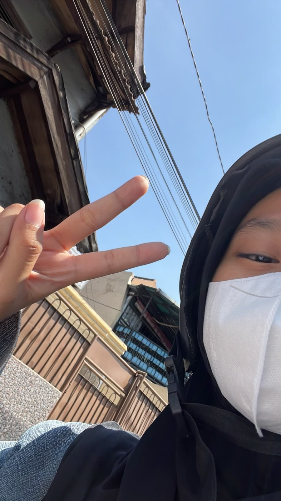

Tentang aku
Halo! Aku Djenar Naesya Ayu, mahasiswi Arsitektur di Universitas Negeri Surabaya. Aku percaya bangunan yang baik membuat penghuninya merasa pulang, sekecil apa pun ruangnya.
Di luar studio, aku menggambar sketsa, membuat maket, dan mencari kafe lucu untuk dijadikan inspirasi desain berikutnya.
Skill favorit
- AutoCAD
- SketchUp
- Revit
- Lumion
- Sketsa tangan
- Maket
- Photoshop
- Presentasi desain
Galeri

Denah
Pilih ruangan untuk melihat ceritanya.
Lagu kita
Siapkah Kau ’Tuk Jatuh Cinta Lagi
HIVI!
0:00 / 0:00
Gravitasi
Gerakkan kursor untuk mengusik. Klik untuk melepas gravitasi.